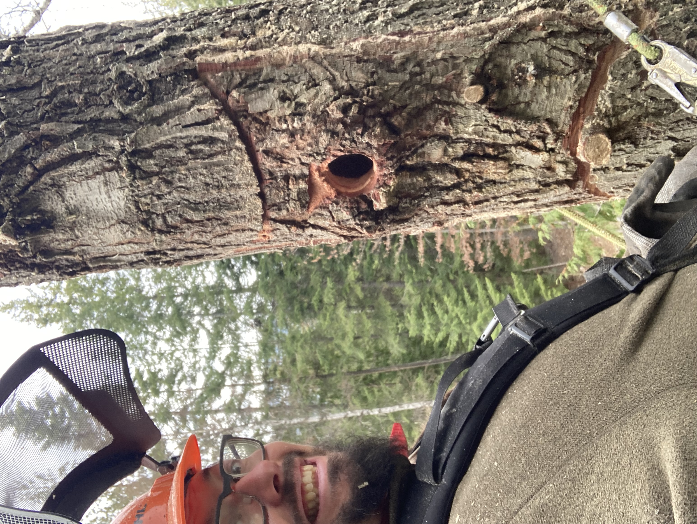

Wildlife snags are an innovative alternative to complete tree removal. When a tree poses some risk but doesn't need to be entirely removed, we can transform it into a valuable habitat feature by creating a "wildlife snag" - a modified standing tree that provides essential habitat for various wildlife species while eliminating safety concerns.
Wildlife Habitat in Action
This modified tree provides crucial habitat for various wildlife species, including nesting sites for woodpeckers and other cavity-nesting birds. Notice the natural cavities that serve as homes for local wildlife.

A wildlife snag showing natural cavities used by various bird species for nesting and shelter.
Wildlife Habitat Creation
- Nesting Cavities: Creating habitat for woodpeckers, owls, and other cavity-nesting birds
- Feeding Sites: Providing foraging opportunities for insect-eating wildlife
- Perching Platforms: Constructing safe resting spots for birds of prey
- Habitat Diversity: Supporting local biodiversity through microhabitat creation
- Natural Integration: Blending wildlife features into your landscape aesthetically
Safety Modifications
- Height Reduction: Lowering the tree to eliminate fall risks while preserving habitat
- Branch Removal: Removing hazardous limbs while maintaining structural integrity
- Stability Assessment: Ensuring the modified tree remains secure during storms
- Placement Considerations: Strategic positioning to avoid property damage if failure occurs
- Ongoing Monitoring: Regular checks to ensure continued safety of the snag
Ecological Benefits
- Species Support: Providing habitat for threatened or sensitive wildlife
- Insect Management: Attracting natural predators of pest insects
- Decomposition Cycle: Contributing to healthy soil processes over time
- Seed Dispersal: Creating perches for birds that spread native plant seeds
- Educational Value: Teaching opportunities about forest ecology and succession
Aesthetic Integration
- Natural Appearance: Creating snags that complement your landscape design
- Artistic Elements: Optional creative carving or sculpting to enhance visual appeal
- Strategic Placement: Positioning snags to serve as natural focal points
- Complementary Plantings: Suggestions for native plants to enhance the habitat area
- Interpretive Options: Creating signage or materials to explain the ecological value